Automatic transfer switch
Switches on its ownYes
Where it mountsBeside the main panel
What it backs upChosen circuits, or the whole panel
Usual fitA unit smaller than the full house load
ComEd visitNot usually
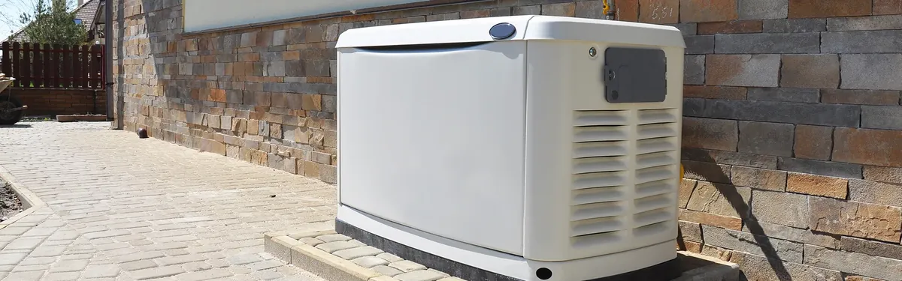
Chicago · All neighborhoods
A Generac standby generator protects a Chicago house only when its electrical side is right: a load calculation, a transfer switch matched to the panel, a permitted feeder from the pad and a tested startup. Highlights Chicago is a City of Chicago licensed electrical contractor with 1,213 City permits on record since 2012, and it also traces faults on Generac units already in the yard.
From the crews, across ChicagoIllustrative photos
See moreStart here
Generac work in Chicago comes in three shapes, and each starts with a different first step.
Select a job to see its scope & first step
The calculated load, the Generac model size, the switch type, free space in the panel and the gas meter’s capacity.
A load calculation at the main panel.
The alarm on the controller, the transfer switch, the generator breaker, the starting battery and the fuel supply.
A photo of the controller display and its alarm.
Whether the pad, the transfer switch and the feeder can stay in service with the new model.
A photo of the model and serial label on the old unit.
Households that are unsure can pick “Not sure which” in the form and send a photo of the unit’s label.
Equipment
The Generac on the pad is the part people see. The switch, the panel, the meter and the wire between them decide whether it carries the house when the grid drops.
The common home Generac, on a pad outside
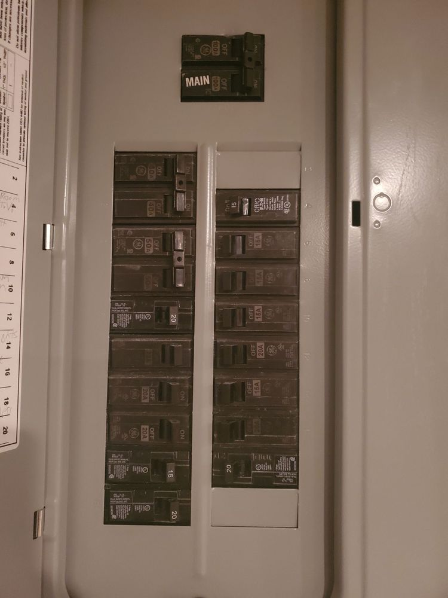
Photo from Highlights Chicago's Yelp pageWhere the transfer switch ties in
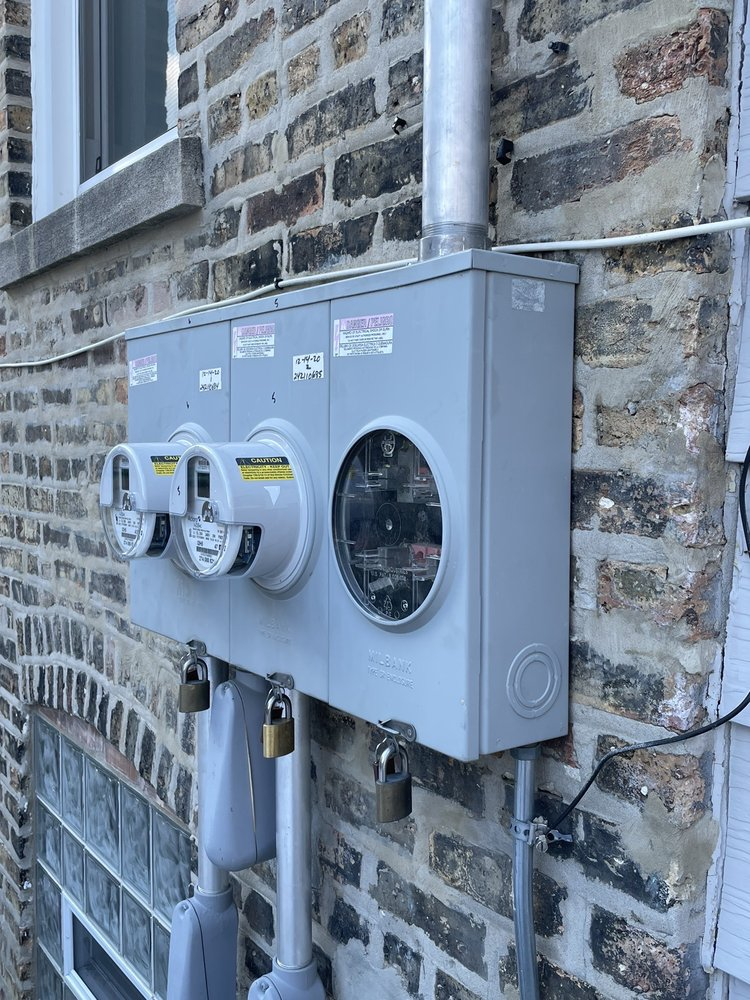
Photo from Highlights Chicago's Yelp pageSets how much the house can draw
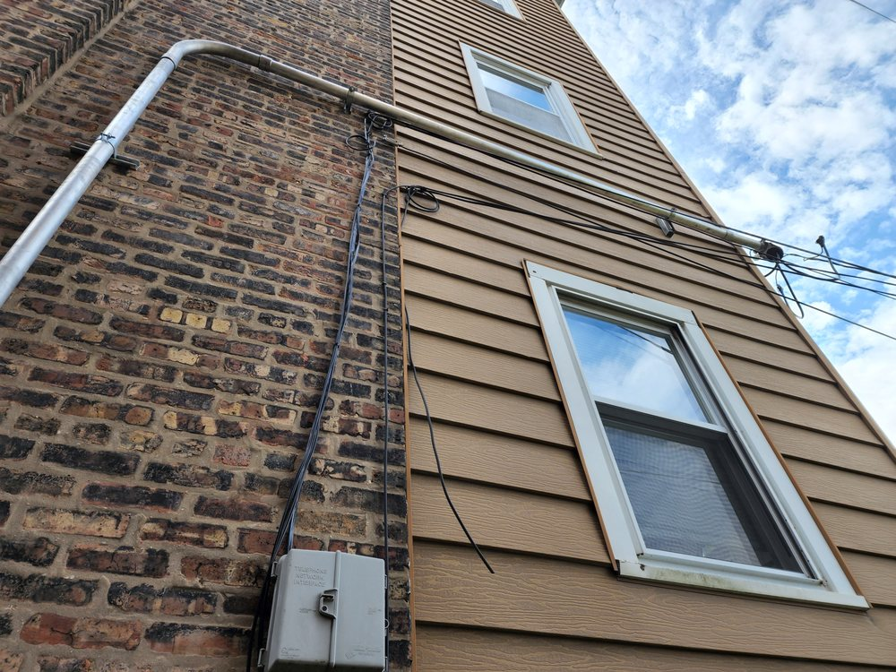
Photo from Highlights Chicago's Yelp pageThe run from the pad to the switch
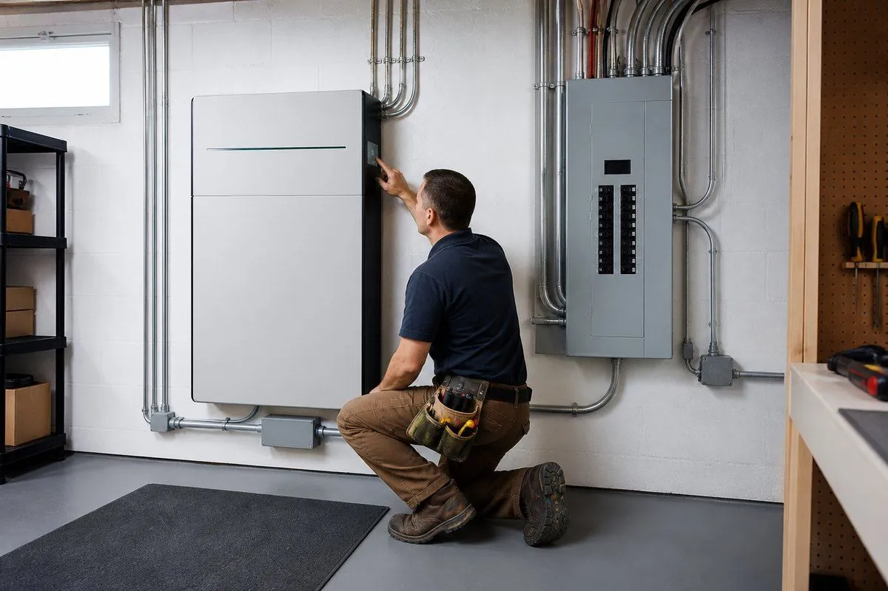
Generac’s PWRcell is a battery, not an engine
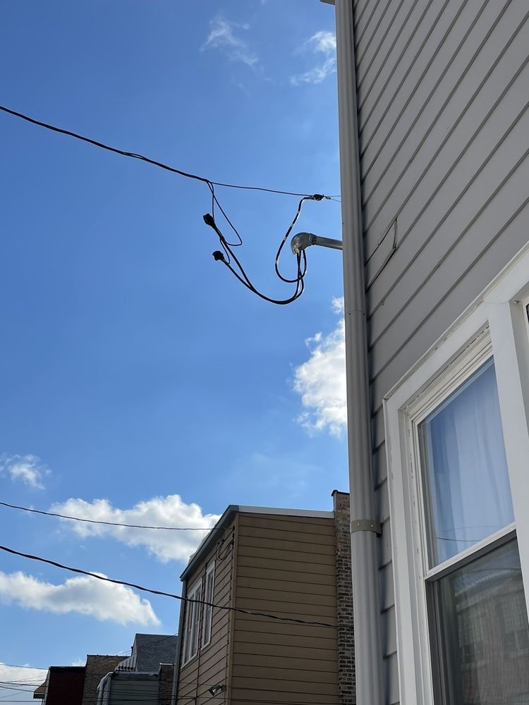
Photo from Highlights Chicago's Yelp pageWhere storms often cut the power first
Every permanent Generac needs a transfer switch, so generator power can never flow back onto ComEd’s lines. These three setups are the common ones in Chicago homes.
The kilowatt rating follows the circuits, not the floor area.
A Generac carrying only the furnace, the sump pump and the refrigerator can be a fraction of the size of one that carries central air and an electric range.
The load calculation shows which of the three a given service and panel can support.
Site assessment
A Generac is sized from the house, not from the brochure. These checks settle the model, the spot on the lot and most of the price.
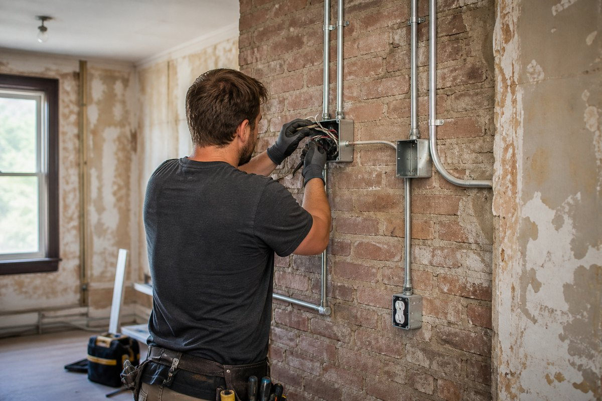
8ChecksNEC Article 702 requires an automatically switched standby system to carry the load it transfers, unless load management limits it. The Article 220 method works out that load, and the figure picks the Generac model.
A Generac switch connects to the existing panel, so the panel’s make, age and free breaker spaces decide which switch fits. A full or discontinued panel changes the plan.
Generac’s installation manual sets clearances from windows, doors, vents and the house wall. On a narrow Chicago lot, those distances often choose the spot.
Each Generac spec sheet lists the model’s gas use at full load. The gas contractor sizes the pipe from that figure, and Peoples Gas decides whether the meter needs an upgrade.
Brick walls, gangways and finished basements decide how the feeder reaches the switch. The Chicago Electrical Code generally calls for conduit, so the route is planned before the pad is placed.
The generator’s neutral and ground have to match the transfer switch. A service-rated switch bonds the neutral differently from a switch after the main panel, and the wiring follows that choice.
Newer Generac units report alarms and exercise runs through the Mobile Link app, over Wi-Fi or a cellular add-on. A brick wall between the router and the pad can weaken the Wi-Fi option.
Condo boards, landlords and shared lots can limit where a Generac goes and when the work happens.
The essential circuits move into breaker space built into the transfer switch, and the old panel stays in place.
The switch becomes the main disconnect ahead of the panel, so a full panel stops being an obstacle.
A new subpanel fed through the switch takes the circuits the household picks.
When the panel is obsolete or too small anyway, the upgrade and the Generac hookup are planned as one job.
The walkthrough settles the route: panel make, free spaces, service rating and the calculated load. Panel work has its own page: electrical panel upgrade in Chicago.
Repair
Most Generac service calls in Chicago start with an outage the unit did not handle, or a red light on the controller. These are the common patterns.
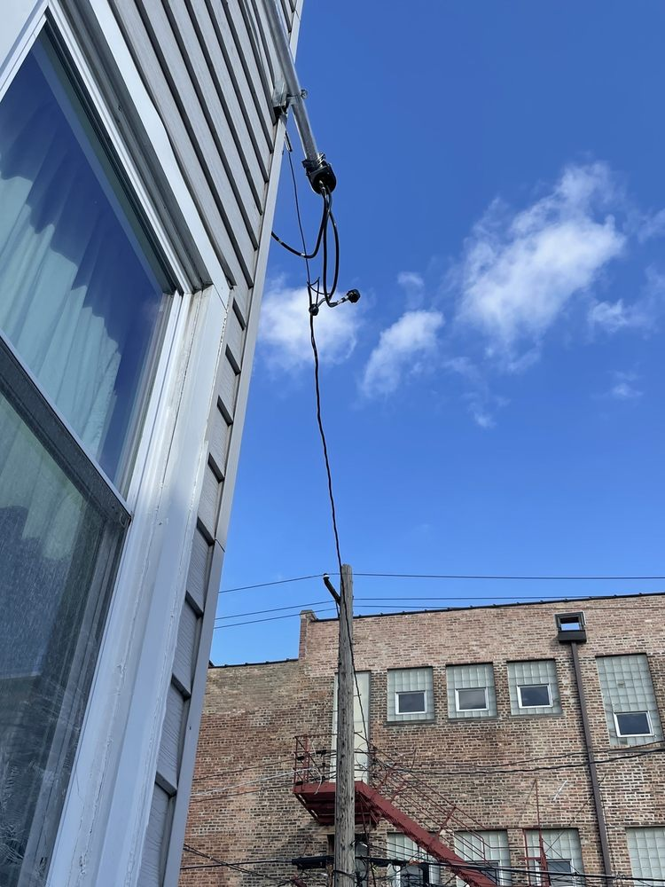
Photo from Highlights Chicago's Yelp pageWhat the homeowner sees
Usual causes
A weak starting battery, the controller left in OFF or MANUAL, a closed gas valve, or an Overcrank or Low Oil Pressure alarm
First thing to check
The controller’s mode and the alarm on its display
Usual causes
The transfer switch did not transfer, or the main breaker on the generator is off
First thing to check
The switch status and the breaker on the unit
Usual causes
A clock reset after a battery change, a dead battery, or the unit left out of AUTO
First thing to check
The exercise day and time set on the controller
Usual causes
Lost Wi-Fi at the pad, a changed router password, or a disconnected cellular add-on. Offline monitoring does not mean the unit has failed
First thing to check
Whether the controller itself shows an alarm
Usual causes
A unit too small for the starting surge, or load modules never set up
First thing to check
What was running and the load settings
Usual causes
Exhaust drifting into a window, door or vent near the unit
First thing to check
Get everyone outside, then call 911
A dead battery, a tripped breaker or a loose control wire is a repair, not a new Generac.
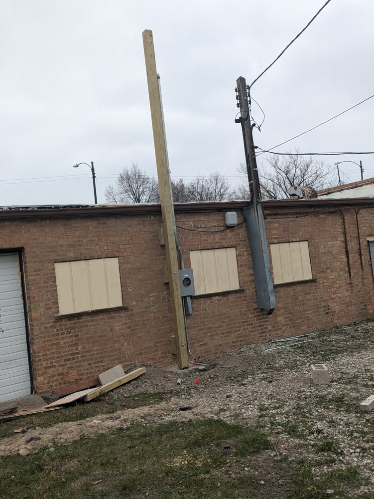
Photo from Highlights Chicago's Yelp pageIce can pull a service mast off the wall, and ComEd reconnects only after the house side is repaired. A Generac keeps the furnace and the sump pump running while that repair waits.
Equipment brands
Generac makes the unit, the transfer switch and the load modules. The panel it ties into can be any make, and these are common in Chicago basements.
5 Brands
Highlights Chicago works on every panel make, and the Generac switch is chosen to match the panel in the house.
About Highlights Chicago
A family-owned Chicago electrical company, established in 2012, working from a shop on N Lincoln Ave in West Ridge.
Owner
Boz
On site for estimates and installs. Reviews also name Raul, Kaplan, Jimmy and Victor.
License
ECC96456
City of Chicago electrical contractor license, also ECC94521
Permit record
1,213
City of Chicago permits on record since April 2012
Permit rank
Top 13%
of Chicago electrical contractors by permit volume, #73 of 588 in the 24 months to August 2026
4.9/5
Google rating
On its City permits, Highlights Chicago is the electrical contractor of record.
Reviews describe Highlights Chicago jobs passing City inspection, the step that closes a permitted Generac hookup.
Emergency electrical service runs around the clock, including the nights a storm takes the power out.
Google reviews
Peyton H.
Jul 2024
“Our power went out late at night and they arrived promptly.”
Nissa B.
Jul 2024
“we needed our weather head replaced before power could be restored to our home.”
Keith G.
Jan 2024
“in an ice storm the team arrived and got to work.”
Nicholas D.
May 2025
“provided a safe, temporary fix until parts could be obtained”
Short excerpts from public Google reviews, each linked to the original. Google and Yelp ratings are reported separately, never merged.
Our work
Service, meter and panel work in Chicago buildings. None of these photos shows a generator; they show the side of the house a Generac connects to.
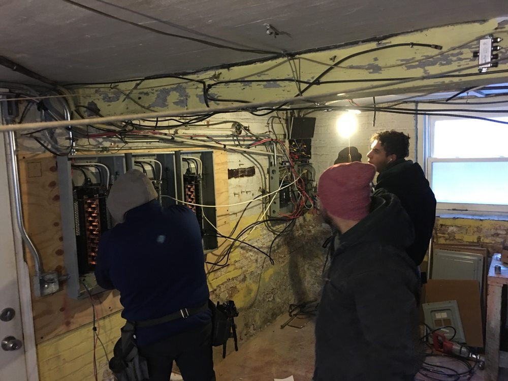
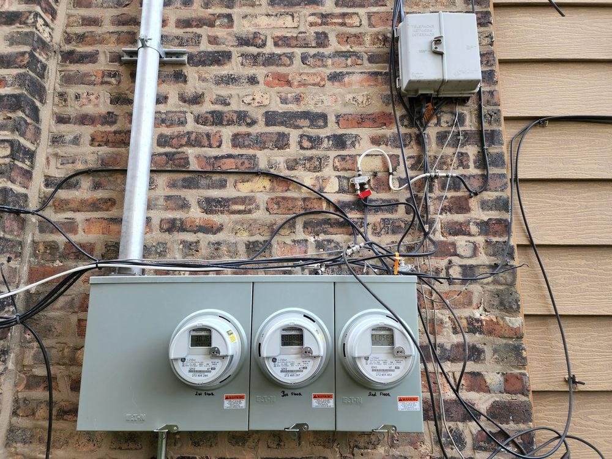
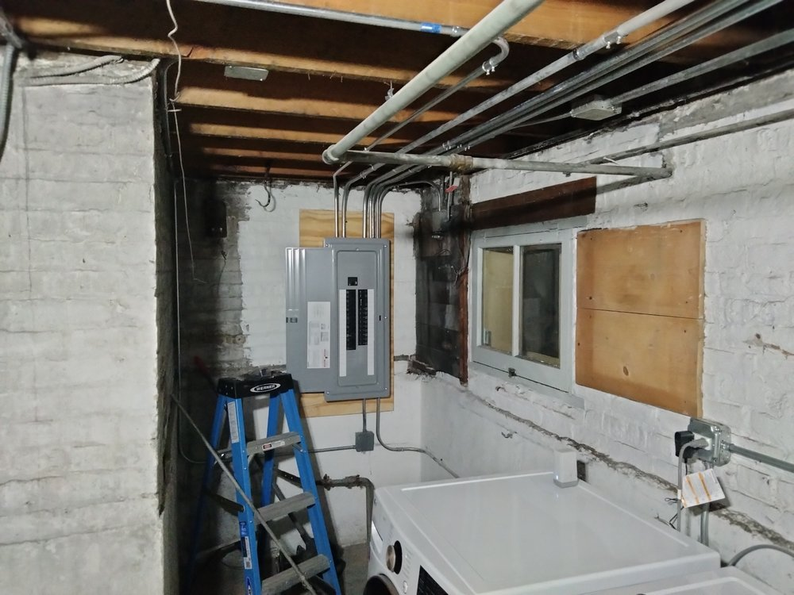
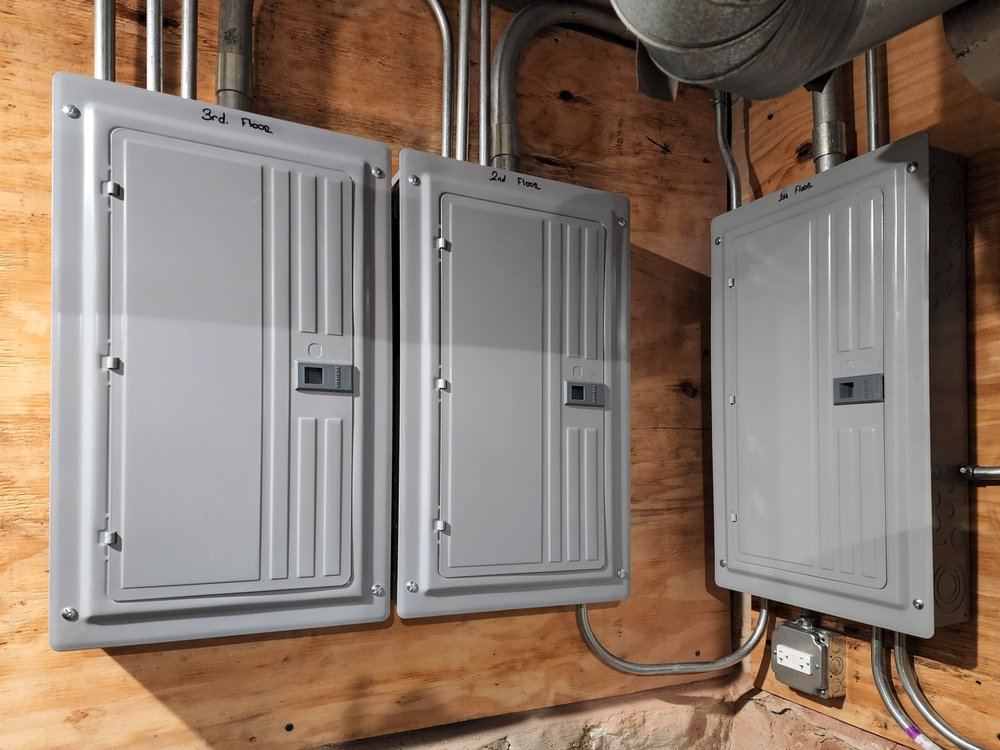
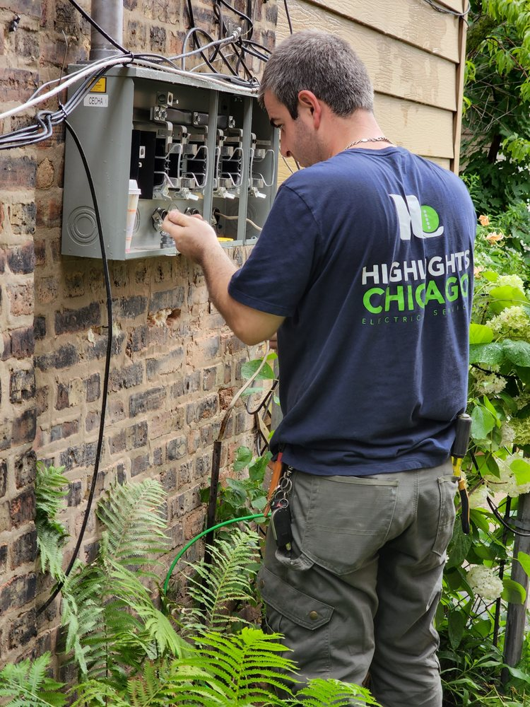
The process · 7 steps
Each step names who holds it, because several waits sit with the City, the gas trade or Generac’s supply chain.
Who controls the step
01/ 07
Swipe or use the arrows to see all 7 steps
How long it takes
Highlights Chicago’s Google reviews do not yet describe the length of a generator job. For the panel work a Generac hookup shares, one customer describes “a large job in one long day, including a new panel box” (Cee K., Apr 2025). Equipment delivery and the gas line usually set the calendar, and City permit review is separate.
Service area
Every Chicago neighborhood, plus Evanston and Palatine.
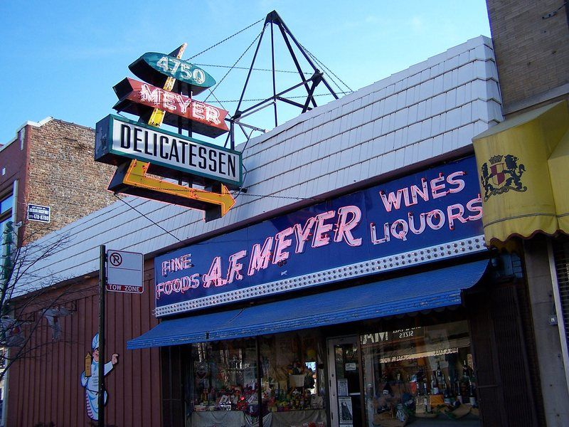
Minutes from the shop
Photo: James~Quinn · CC BY-SA 2.0 · Wikimedia Commons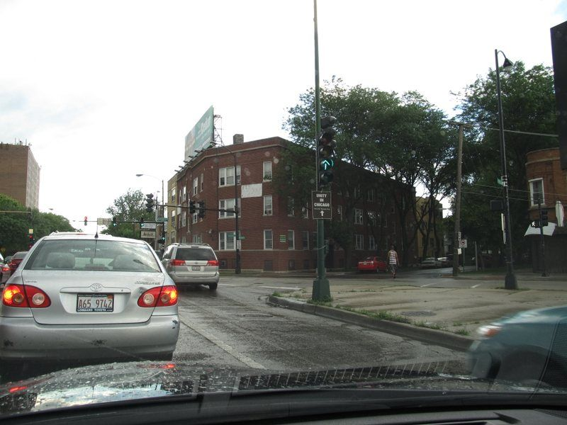
Next door to the West Ridge shop
Photo: Ken Lund from Reno, Nevada, USA · CC BY-SA 2.0 · Wikimedia CommonsJensen Park
Photo: Nick Number · CC BY 4.0 · Wikimedia Commons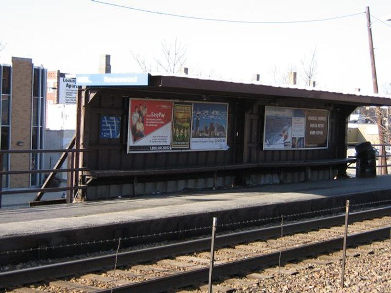
Ravenswood Metra
Photo: Matt Sommer (presumably, Sommermt at en.wikipedia) · CC BY-SA 2.5 · Wikimedia Commons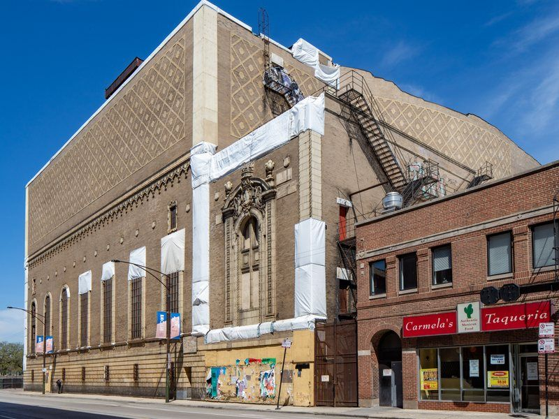
The Uptown marquee
Photo: Paul R. Burley · CC BY-SA 4.0 · Wikimedia CommonsCentennial Monument
Photo: Roberto Morales · CC BY-SA 4.0 · Wikimedia Commons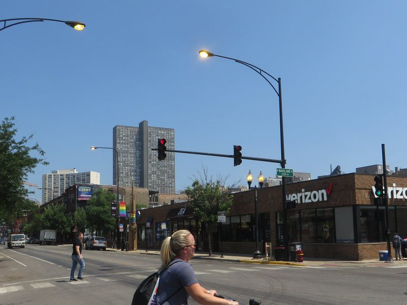
70.9% of houses predate 1940
Photo: Ken Lund from Reno, Nevada, USA · CC BY-SA 2.0 · Wikimedia Commons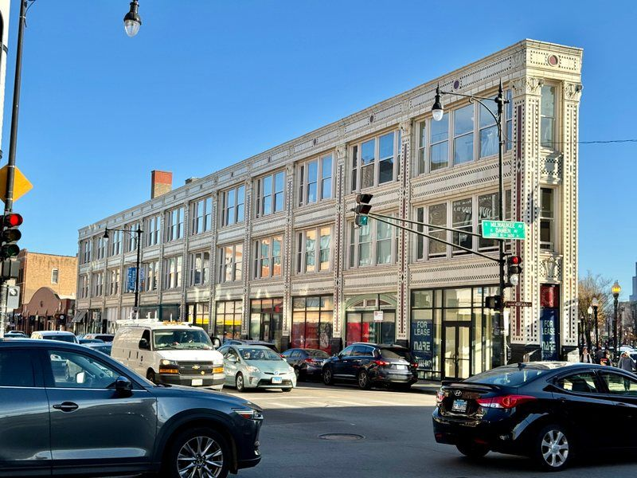
83.0% of houses predate 1940
Photo: Warren LeMay from Chicago, IL, United States · CC BY-SA 4.0 · Wikimedia Commons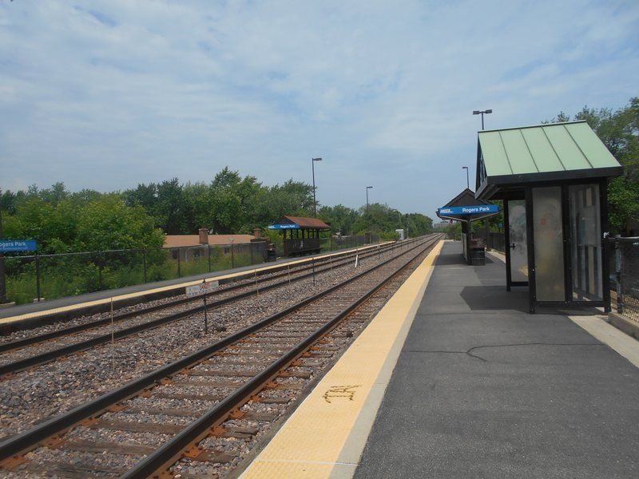
Rogers Park Metra
Photo: Adam Moss · CC BY-SA 2.0 · Wikimedia CommonsTransit hub
Photo: Jacob G. from Chicago, Ilinois, United States · CC BY-SA 2.0 · Wikimedia Commons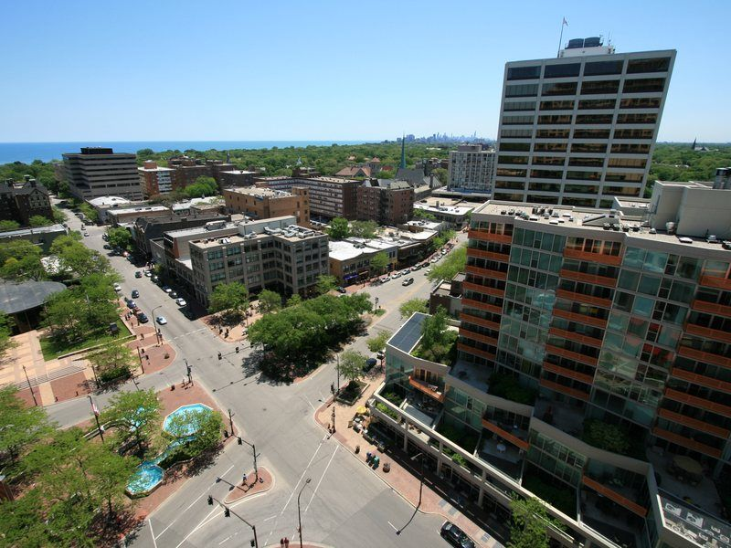
North Shore suburb
Photo: Madcoverboy (talk) · CC BY-SA 3.0 · Wikimedia CommonsNorthwest suburb
Photo: Mysterymanblue · CC0 · Wikimedia CommonsNot listed? Inside the city, Highlights Chicago covers it. Call to check.
Service note · Chicago buildings
On narrow Chicago lots a Generac often ends up in the gangway or beside a garage off the alley, which lengthens the feeder back to the panel.
More from Highlights Chicago
Cost & permits
Chicago recorded 161 generator permits with a reported cost in the 24 months to August 2026, at a median of $15,000. The cards show that median and the service medians that apply when a Generac hookup also needs a bigger service; the table prices the rest by what drives it.
Data sourceReported construction value for the whole project on City of Chicago electrical permits, August 2024 to August 2026, not a quote. Source: City of Chicago Building Permits.
$15,000
median reported
161 permits
$4,700
median reported
2,863 permits
$10,000
median reported
382 permits
Permit values are the reported construction value for the whole project, not a quote.
8 cost drivers
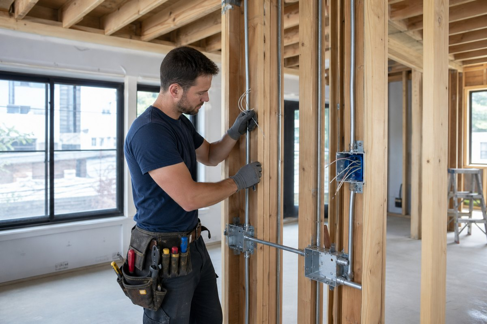
Sets the unit, the pad and the gas demand
Decides the switch rating and any subpanel
A service-rated switch or modules add parts
Longer conduit through brick or under walks
Pipe size, length and any meter upgrade
A full or obsolete panel adds an upgrade
Gangways, steps and soft ground slow the setting
A longer feeder when a board picks the spot
Estimates and payment
Highlights Chicago gives free estimates. A price for one house needs a look at the panel, the meter and the spot for the unit. Payment is accepted by credit card, Zelle, Venmo, PayPal, Cash App or cryptocurrency, and a military discount is offered.
Incentives
Neither IRS home energy credit page lists a standby generator (both read October 26, 2026). The Residential Clean Energy Credit, which covered battery storage of at least 3 kilowatt hours, is not available for property placed in service after December 31, 2025. The Energy Efficient Home Improvement Credit covered improvements made through December 31, 2025.
Sources: IRS: Residential Clean Energy Credit · IRS: Energy Efficient Home Improvement Credit
Scope & handover
The scope splits three ways: the work in a typical Generac install, the extras some homes need, and what the household holds at the end.
Included
A typical job. The walkthrough decides what a specific home needs.
Separate quote
Added only where the walkthrough shows the home needs it.
At handover
7 items to collect
The number the City files the job under. A buyer, an insurer or a future electrician can look it up.
The inspector’s sign-off on the electrical work: the switch, the feeder and the grounding.
Marked with what it serves and how to set it, so anyone in the house can operate it in the dark.
Which breakers stay live in an outage, posted at the panel where it is easy to find.
The manual for this model, and the service plan the household agreed to follow.
The model and serial number, the startup date and the registration Generac asks for.
The unit paired to a phone, with alerts going to whoever looks after the house.
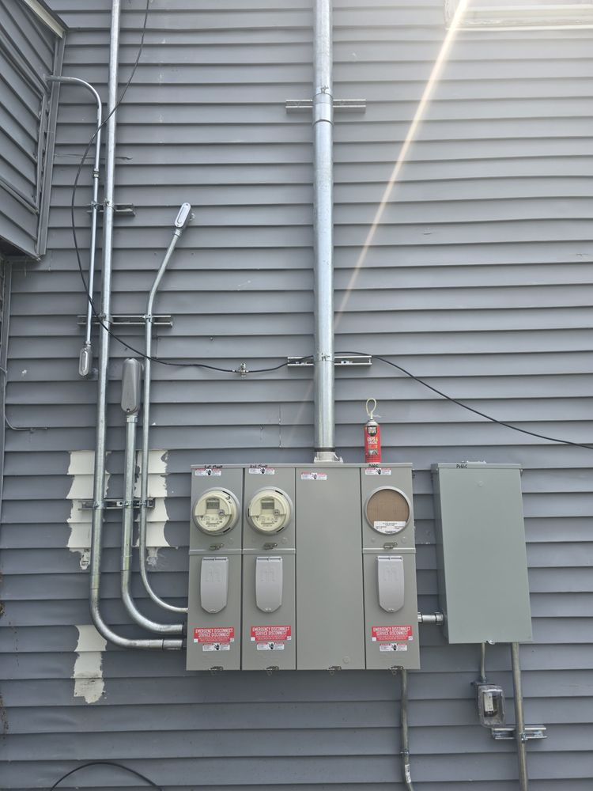
Photo: George A. on YelpWarranties
Generac, under its limited warranty for the model. Registration terms are in Generac’s warranty statement.
Generac, under its own terms.
Generac. Battery terms usually depend on years and on energy cycled.
The panel maker.
No. The circuits that protect a Chicago house in an outage are few: the furnace or boiler, the sump pump, the refrigerator and some lights. A smaller Generac on those circuits covers the damage risk, and everything above that is comfort. Highlights Chicago can price both sizes from one walkthrough, before the household decides.
Generac sells home standby units through authorized dealers, listed on Generac’s own dealer locator. The licensed part of the job is the electrical work Highlights Chicago does: the load calculation, the transfer switch, the feeder, the City permit and the inspection. How the unit itself is supplied is worth settling in the estimate, before anything is ordered.
Most houses fit an air-cooled Guardian model, which Generac sells from about 10 to 26 kilowatts. Liquid-cooled models serve larger loads and longer run times, at a higher price and with more maintenance. Highlights Chicago lets the load calculation decide which side of that line a house falls on.
A Guardian unit runs a short self-test on a set day each week. Many newer models run it at reduced engine speed, so it is quieter than a full-load run. During an outage it runs at full speed until ComEd power returns. In a gangway between houses the sound carries next door, which is worth weighing when the spot is chosen.
Generac’s limited warranty terms depend on the model, and Generac’s warranty statement sets out registration and who may install and start up the unit. Reading those terms before the order is placed avoids a gap later. The City permit and the passed inspection belong in the same folder, as a record that the electrical work met code.
Yes, most home Generac models run on natural gas or propane. Chicago houses usually use natural gas from the street main, since a propane tank needs yard space, clearances and refills that a city lot rarely offers. Generac rates many models slightly lower on natural gas than on propane, so the fuel is settled before the size.
Yes, through an inlet box outside and a transfer switch or listed interlock at the panel, so only one source can feed the house. A cord plugged into a dryer outlet can push power back onto ComEd’s lines and endanger line workers. The inlet and the interlock are licensed electrical work, permitted like any other change at the panel.
Yes. The City’s electrical permit form records each permanent generator by its kilowatt rating, and the gas piping is permitted separately. An unpermitted Generac tends to surface during a home sale, and the inspection is the only outside check that the transfer switch was wired correctly.
Generac’s owner’s manual sets service intervals by run hours and by years, covering oil, filters, spark plugs and the battery. Newer controllers flag a maintenance reminder on the display. Highlights Chicago handles the electrical side of a service visit: the battery charger circuit, the transfer switch and the wiring.
Next step
Clear photos of the main panel, the gas meter and the spot planned for the unit let the walkthrough start with the right questions.
4.9
494 Google reviews
4.9
307 Yelp reviews
1,213
City permits on record since 2012
ECC96456
City of Chicago Electrical Contractor
A photo of the main panel with its label readable
A photo of the gas meter
Where the Generac would sit
A list of what must run in an outage
The model and serial label of any existing generator
Generac and the panels it connects to
Guide · 3 questions
Three longer answers for Chicago households weighing a Generac.
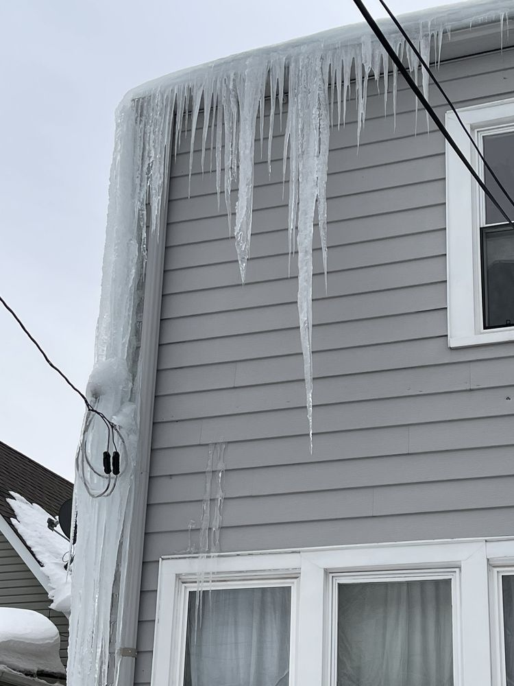
Photo from Highlights Chicago's Yelp pageGuide 01 / 03
Winter is when a Chicago Generac is most likely to be needed and least likely to start easily. A weak battery, thick oil and snow drifted against the enclosure are the usual culprits. Highlights Chicago checks the electrical side a cold start depends on: the battery charger circuit, the transfer switch and the wiring.
Chicago’s outages cluster in two seasons: summer storms and winter ice. The winter ones are the costly kind, because a furnace or boiler that stops can let pipes freeze within hours.
The usual approach treats a standby unit as set and forget. It exercises itself each week, so the household assumes it will start in January. But a weekly run in mild weather says little about a start at single-digit temperatures.
What changes in the cold is the battery and the oil. A battery loses much of its cranking power as it chills, and the wrong oil grade thickens. Generac sells cold-weather kits with battery and oil heaters for its air-cooled units.
Highlights Chicago looks at the parts of a winter start that are electrical: the charger circuit that keeps the battery topped up, the switch and the wiring. Engine service follows Generac’s manual. A full panel review sits on the electrical panel upgrade page.
One customer describes a crew that “worked outdoors even in cold conditions” (Jose G., Feb 2026). The Cook County Assessor dates 58.6% of Chicago’s houses and small residential buildings to before 1940. In buildings that age, the pump and heating circuits are worth checking before the first cold snap.
Guide 02 / 03
A Generac in the yard of a house for sale is only an asset if its permit, its switch and its service history check out. Highlights Chicago can read the panel and switch side and say whether the hookup looks permitted and sound.
Plenty of Chicago houses change hands with a standby unit already on a pad. A listing usually describes it in one line, and the inspection report often stops at "unit present".
The usual assumption is that a working unit is a finished system. Yet the generator may have been wired by whoever sold it, without a City permit or an inspection of the transfer switch.
The City publishes every building permit on its open data portal, so a permit for the generator either exists or it does not. The model and serial label then give the unit’s age and size against the house as it is today.
Highlights Chicago can check the transfer switch, the generator breaker and the feeder, and compare the unit’s size with the current load. A replacement, if one makes sense, follows the whole-house generator installation route.
The permit record is public in the same way for contractors. Highlights Chicago has 1,213 City permits on record since April 2012, each one searchable on the City of Chicago data portal.
Guide 03 / 03
A Generac PWRcell suits a Chicago house that wants silent backup for short outages, has no room for a gas-fed unit, or already has solar on the roof. Pricing both against the same panel, before either is ordered, is how Highlights Chicago settles the choice.
Generac sells two kinds of home backup: the engine-driven standby generator and the PWRcell battery. The two solve different outages.
The usual pitch picks one by habit. A gas generator runs as long as the gas flows, but it needs a pad, clearances and a gas line. A battery needs none of those, but it holds a fixed amount of energy.
The shift is that most Chicago outages are short, while the costly ones are long winter events. A battery covers the first kind quietly. Only a generator, or a battery with solar recharging it, covers a multi-day outage.
Highlights Chicago wires both, so a household can price a PWRcell against a standby Generac on the same panel. The battery side has its own page: solar battery installation in Chicago.
Either way, the tie-in lands at the main panel, the work Highlights Chicago’s own record leans on most: 281 of its 486 stand-alone electrical permits are panel or service work.